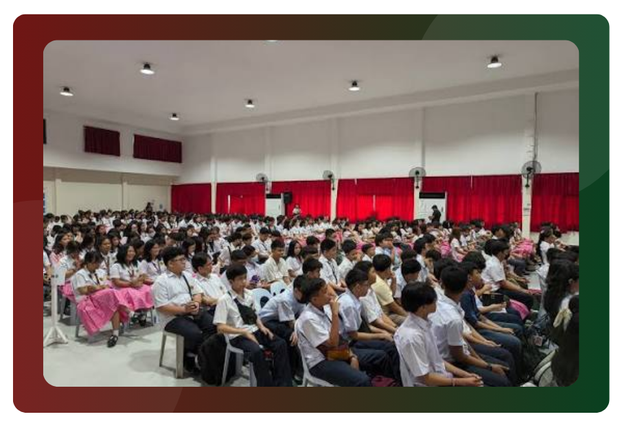

Junior High School
Incoming Grade 7
Applications: September 4–October 9, 2026. Entrance Examination: October 17, 2026.
View Grade 7 AdmissionsFind admission requirements, application schedules, forms, and important updates for incoming Grade 7 and Grade 11 applicants.
Each countdown first tracks the end of its admission period. Once applications close, it automatically switches to the corresponding entrance examination countdown.
Open the appropriate admissions page for complete screening requirements, required documents, deadlines, and reminders.

Applications: September 4–October 9, 2026. Entrance Examination: October 17, 2026.
View Grade 7 AdmissionsApplications: September 4–October 19, 2026. Entrance Examination: October 24, 2026.
View Grade 11 AdmissionsApplication deadlines are the final dates of each application period.
Keep posted through the official UPHSI Facebook page.
Keep posted through the official UPHSI Facebook page.
The University of the Philippines Visayas has adopted a policy of democratized admission for students in the high schools of the U.P. System. Under this policy, “Every high school in U.P. is a program for helping economically-disadvantaged but deserving students gain access to tertiary education in U.P.”
In accordance with the UP Policy for Democratization of Admission, the UP High School in Iloilo admits incoming Grade Seven and Eleven students from low-income families, or those with an annual income of PhP 250,000 and below, which makes up 70% of the freshmen population.
The change in the Democratized Admission Policy recommended by the UP System Technical Working Group on Basic Education and duly endorsed by the System Academic Affairs Committee and the President’s Advisory Council reserves 30% of the freshmen student population for UP alumni dependents, UP employees’ dependents, and others.
As such, the High School is an experimental laboratory for innovative teaching strategies designed to make up for this disadvantaged group's training in order to better prepare them for access to tertiary education, particularly in UP.
Grade 7 and Grade 11 admissions begin for AY 2027–2028.
Last day to submit Grade 7 applications.
Last day to submit Grade 11 applications.